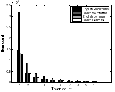

MT Reading Group, April 19, 2006
| Czech | English | |
|---|---|---|
| a. | plural past tense |
plural past tense |
| b. | person negation genitive case instrumental case |
pronouns not of by or with |
| c. | gender | none |
| d. | other case markings | syntax |
| (02) | P(fj|ei) = ∏k P(fjk|ei) |
| a. | Original: | Pro nĕkoho by její provedení mĕlo smysl . |
| b. | Lemmas: | pro nĕkdo být jeho provedení mít smysl . |
| c. | Morpheme Tokens: | pro nĕkdo být PER_3 jeho provedení mít PER_X smysl . |
| d. | Modified Lemmas: | pro nĕkdo být+PER_3 jeho provedení mít+PER_X smysl . |
| e. | Vector: | (pro) (nĕkdo) (být PER_3) (jeho) (provedení) (mít PER_X) (smysl) (.) |
Roughly same number of rare lemmas in English and Czech, but roughly twice as many rare inflected wordforms in Czech.
| Tag Class | Count | |
|---|---|---|
| a. | PER | 49700 |
| b. | TEN | 47744 |
| c. | past | 22544 |
| d. | present | 20291 |
| e. | future | 1707 |
| f. | other | 3202 |
| g. | NUM | 151646 |
| h. | CASE | 151646 |
| i. | NEG | 3326 |
(04) Figure: Number of items y with token count of x.
Experiments were with a word-to-word (not phrase-based) translation system.
BLEU score difference of .009 is significant (p < .05).
| Dev | Test | ||
|---|---|---|---|
| a. | word-to-word | .311 | .270 |
| b. | truncate (k=6) | .353 | .283 |
| c. | lemmatize all | .355 | .299 |
| d. | except Pro | .350 | – |
| e. | except Pro, V, N | .346 | – |
| f. | n < 50 | .370 | .306 |
| Tokens | Mod-Lem | Vectors | ||
|---|---|---|---|---|
| a. | PER | .365 | .356 | .356 |
| b. | TEN | .365 | .361 | .364 |
| c. | PER,TEN | .355 | .362 | .355 |
| d. | NUM | .354 | .367 | .361 |
| e. | CASE | .353 | .340 | .337 |
| f. | NEG | .357 | .356 | .353 |
| Dev | Test | |
|---|---|---|
| combined model | .390 | .333 |
The best lemmatization results occurred with lemmatizing low-frequency words (06f). Truncation (06b) performed significantly better than baseline (06a), but significantly worse than lemmatization.
Scores on other experiments (07) are reported on the Dev set only. None scored better than lemmatization (!).
Adding person-agreement tokens (PER) helped, and examination confirmed that they did, indeed, align with English pronouns. Inexplicably, tense-marking tokens (TEN) helped just as much, but using both PER and TEN canceled the benefits of either.
For modified lemmas, number (NUM) and tense tags helped, which makes sense since these are also marked in English. Case tags hurt, which also makes sense, since they increase data sparseness without providing any information corresponding with English.
Feature vectors did not perform significantly better than morpheme tokens in any experiment (!).
The combined model performed best of all, successfully combining the advantages of each method.
German→English alignment is hindered by long German compounds aligning with English phrases, and a large proportion of hapax legomena.
This system aligns based on word length and POS patterns, without relying on frequency counts.
Nießen & Ney (2001) and Tschorn & Lüdeling (2003) split German compounds into components. This only works if the meaning of the compound is compositional (09).
| (09) | Personen-stand | 'marital status' |
| personal-status |
This criticism suggests word-based translation.
| Language | Tokens | Types | Hapax Legomena | Other Rare | Frequent |
|---|---|---|---|---|---|
| English | 29,077,024 | 101,967 | 39,200 (38%) | 35,608 (35%) | 27,159 (27%) |
| German | 27,643,792 | 286,330 | 140,826 (49%) | 98,126 (34%) | 47,378 (17%) |
Of 512 German hapax legomena examined:
| German compound length | |||||
|---|---|---|---|---|---|
| English | 1 | 2 | 3 | 4 | >4 |
| 1 word | 59 | 2 | 1 | 0 | 3 |
| 2 words | 30 | 119 | 56 | 15 | 10 |
| 3 words | 2 | 20 | 15 | 8 | 10 |
| 4 words | 0 | 1 | 0 | 0 | 2 |
The English phrase length is often 1 more due to PP (12).
| (12) | Kongresh-vorlage |
| submission to Congress |
What happens if there are multiple qualifying candidates?
| Metrics | BLEU | ||||
|---|---|---|---|---|---|
| prec | recall | acc | WBSMT | PBSMT | |
| none | – | 0.0% | 94.2% | .291 | .305 |
| eager | 24.8% | 73.3% | 87.1% | .222 | .344 |
| frequency based | 57.4% | 86.6% | 95.7% | .317 | .342 |
| parallel | 83.3% | 89.1% | 98.6% | .294 | .330 |
| parallel & POS | 93.8% | 90.1% | 99.1% | .306 | .326 |
| Model 1 | PBSMT | |||
|---|---|---|---|---|
| # sentences | base | morph | base | morph |
| 3.5K | .10 | .25 | .17 | .24 |
| 35K | .14 | .29 | .24 | .29 |
| 350K | .18 | .31 | .32 | .36 |
| 3.3M | .18 | .32 | .36 | .39 |
| #sent | Method | 1-BLEU | mWER | SSER | ISER |
|---|---|---|---|---|---|
| 0 | baseline | 76.7 | 53.6 | 60.4 | 29.8 |
| restructure | 70.9 | 50.2 | 57.8 | 30.0 | |
| + all | 67.4 | 48.0 | 52.8 | 24.1 | |
| 5K | baseline | 52.6 | 38.0 | 37.3 | 17.4 |
| restructure | 47.9 | 34.7 | 33.6 | 15.2 | |
| + all | 47.1 | 33.9 | 31.8 | 13.7 | |
| 58K | baseline | 46.3 | 34.1 | 30.2 | 14.1 |
| restructure | 43.7 | 32.5 | 26.6 | 12.8 | |
| + all | 42.9 | 31.8 | 26.3 | 11.8 |
Sharon Goldwater, David McClosky. Improving Statistical MT through Morphological Analysis. Proceedings of the Conference on Empirical Methods in Natural Language Processing (EMNLP). Vancouver, 2005. [pdf, ps]
Nizar Habash, Owen Rambow. Arabic Tokenization, Part-of-Speech Tagging and Morphological Disambiguation in One Fell Swoop. ACL-05. [pdf]
Philipp Koehn, Kevin Knight. Empirical Methods for Compound Splitting. EACL 2003. [pdf, ps, abstract]
Young-Suk Lee. Morphological Analysis for Statistical Machine Translation. In Susan Dumais, Daniel Marcu, Salim Roukos, eds., HLT-NAACL 2004: Short Papers, 57–60, Boston, Massachusetts, May 2004. [pdf, ps]
Sonja Nießen, Hermann Ney. Toward hierarchical models for statistical machine translation of inflected languages. In ACL-EACL-2001: 39th Annual Meeting of the Association for Computational Linguistics – joint with EACL 2001: Proceedings of the Workshop on Data-Driven Machine Translation, 47-54. Toulouse, France, July 2001. [ps]
Sonja Nießen, Hermann Ney. Statistical Machine Translation with Scarce Resources Using Morpho-Syntactic Information. In Computational Linguistics, Volume 30, Number 2, pp. 181-204, June 2004. [CogNet]
Maja Popović, David Vilar, Hermann Ney, Slobodan Jovičić, Zoran Šarić. Augmenting a Small Parallel Text with Morpho-syntactic Language Resources for Serbian-English Statistical Machine Translation. In Proceedings of the ACL Workshop on Building and Using Parallel Texts: Data-Driven Machine Translation and Beyond, 41-48. Ann Arbor, Michigan, June 2005. [pdf]
Bettina Schrader. Non-Probabilistic Alignment of Rare German and English Nominal Expressions. To appear in: Proceedings of the Fifth International Conference on Language Resources and Evaluation (LREC), May 2006, Genoa, Italy.